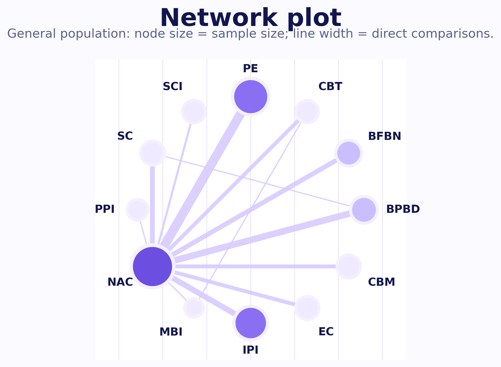
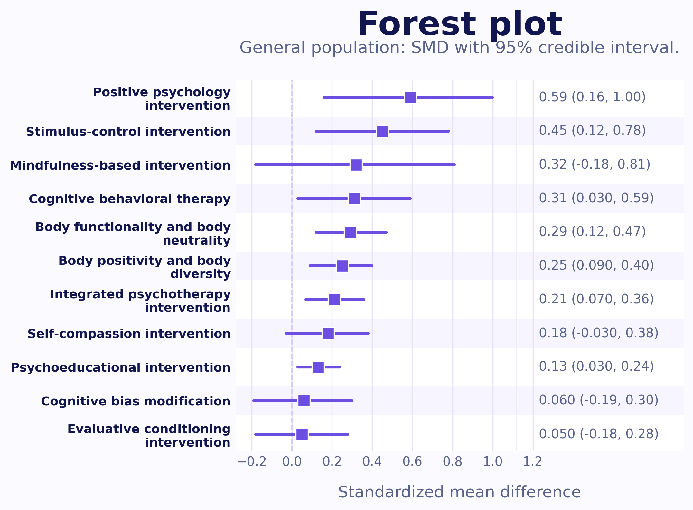
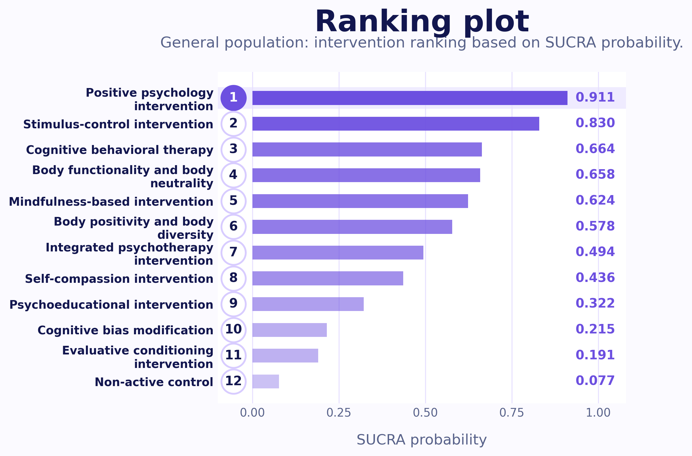
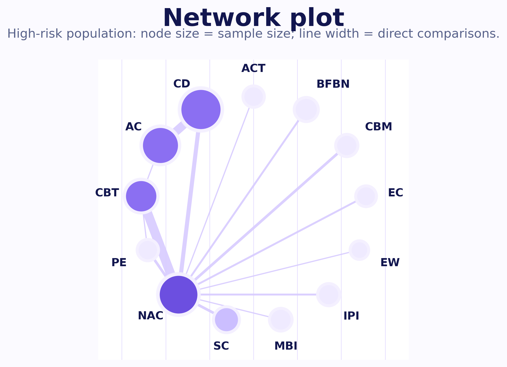
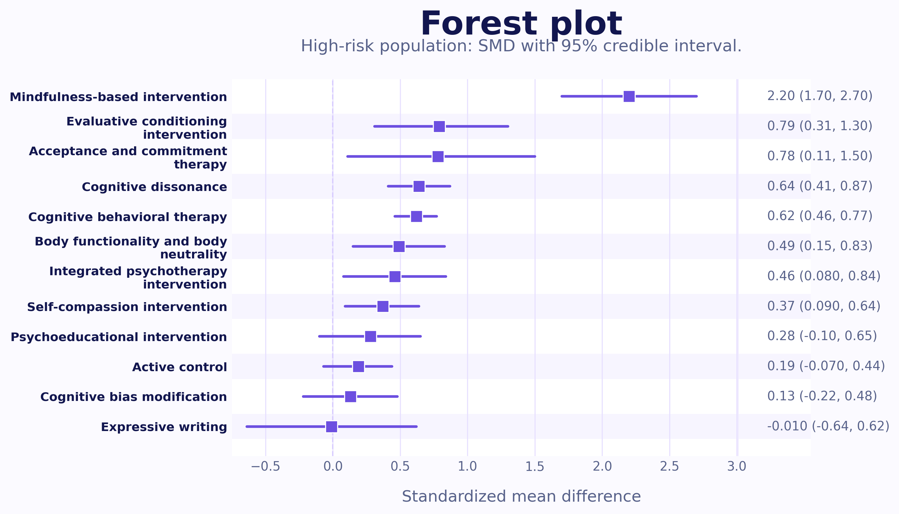
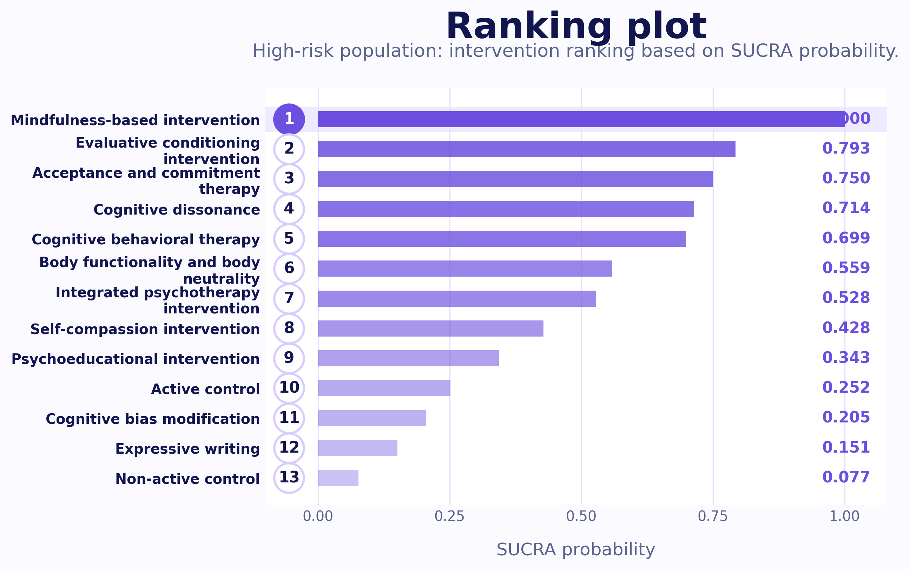
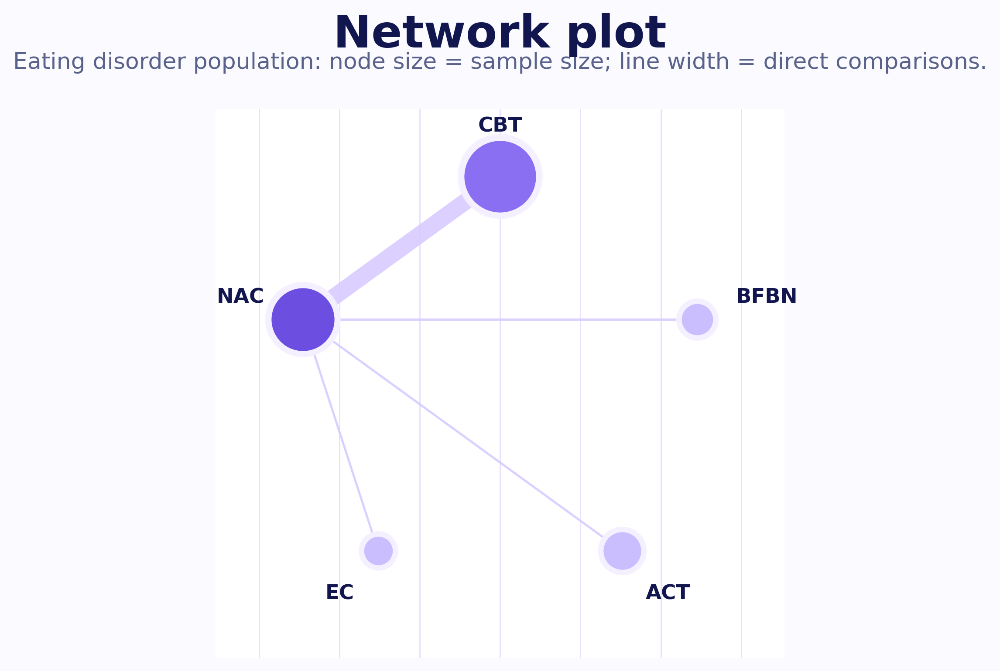
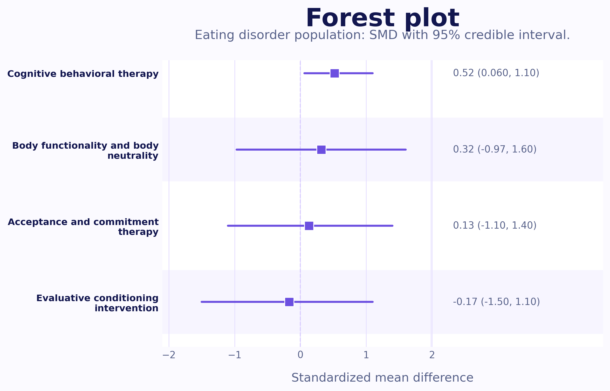
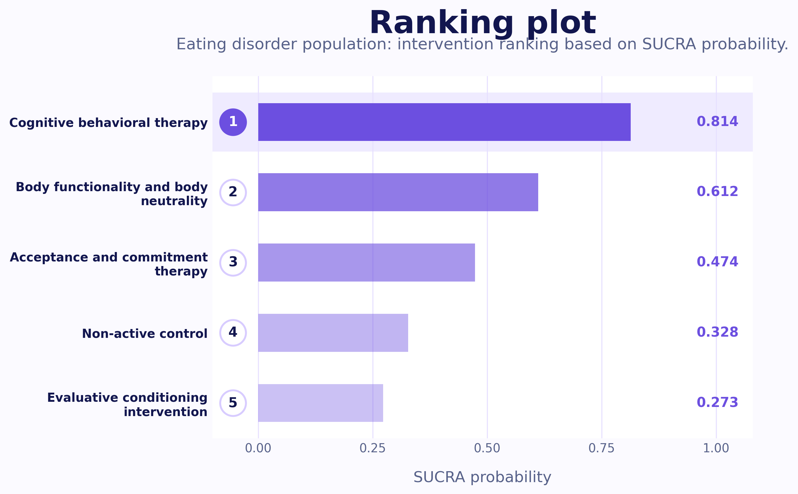

15,000+
Participants
Living Systematic Review of Body Image Interventions
Summary at a glance
Population groups (full dataset)
General population
45.45%
High risk population
46.28%
Eating disorder population
8.26%
Population groups
General population
Community or college samples recruited without explicit screening for body-image or eating-disorder risk, and without a formal clinical diagnosis.
Learn more →High risk population
Participants at elevated risk based on screening, self-reported concerns, subthreshold symptoms, or risk-related recruitment, without a formal diagnosis.
Learn more →Eating disorder population
Clinical samples with a confirmed eating-disorder diagnosis, or recruitment from clinical treatment settings.
Learn more →Interventions
View population-specific results →Click any intervention card to enlarge it, flip it, and view a short description. Control nodes are included as comparator categories.
Population-specific results
General population
This section presents intervention effects among community or college samples recruited without explicit screening for body-image or eating-disorder risk, and without a formal clinical diagnosis.
Network plot
Network structure of interventions for the general population.

Forest plot
Comparative intervention effects for the general population.

Ranking plot
Intervention ranking based on SUCRA probabilities.

Population-specific results
High risk population
This section presents intervention effects among participants at elevated risk based on screening, self-reported concerns, subthreshold symptoms, or risk-related recruitment, without a formal diagnosis.
Network plot
Network structure of interventions for the high-risk population.

Forest plot
Comparative intervention effects for the high-risk population.

Ranking plot
Intervention ranking based on SUCRA probabilities.

Population-specific results
Eating disorder population
This section presents intervention effects among clinical samples with a confirmed eating-disorder, or recruitment from clinical treatment settings.
Network plot
Network structure of interventions for the eating disorder population.

Forest plot
Comparative intervention effects for the eating disorder population.

Ranking plot
Intervention ranking based on SUCRA probabilities.
